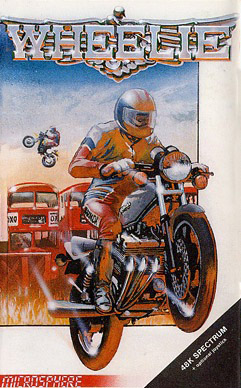
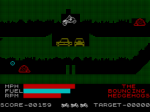

Wheelie


{kind=link}

| Publisher: | Microsphere |
| Price: | £5.95 |
| Year: | 1983 |
| Source: | CRASH, Issue 2 |

Microsphere seem to have done it again, following up their excellent Train Game with another wholly original, beautifully put together game in Wheelie. You have just taken delivery of the ultimate two-wheeled machine — the four cylinder fuel-injected turbo-charged Zedexaki 500. While you’re out on the road trying it out, you see this sign saying ‘Private road — no speed limit to brave riders’. All excited, you enter the driveway, the gates slam shut behind you, and you are trapped in Nightmare Park. Your only way out now is to find the ghostrider, who’s dozing somewhere off to the right, wake him up and then race him back. The park is full of wildlife, all trained in karate, so bumping into any is not so good for the health.

Microsphere’s wonderful Wheelie.
The screen display takes the form of four ‘roads’ stacked one on another almost like a cross section through caves. There are not always four visible, and any road travelled may well go steeply up or downhill to another level. There are thin ‘up/downhill’ lines across some, and the bike will travel down a level if the down key is pressed, and the same for uphill.
Apart from the vicious wildlife (includes leaping kangaroos and giant hedgehogs getting their own back for truckers) there are other problems to be encountered. Humps in the road can only be got over by accelerating rapidly at the last second and doing a ‘wheelie’ — front wheel riding up and over. Sometimes you have to jump over a bus! There’s also ice on some roads, which must be taken with caution. Running into a dead end will kill you off if you don’t brake in time, and going downhill too fast can also be rather fatal! Gas stations are few and far between, so it’s worth backtracking for them. To be promoted to a new level requires completing the one you’re on, when you’ll be given a code to let you enter the next one up. Good riding!
CRITICISM
‘When I first saw another reviewer playing ‘Wheelie’, I thought that it was totally different and looked good. Then I got round to reviewing it and my impression that it was a sort of ‘Scramble’ game faded! It’s much, much more! Revs are important when jumping cars and buses — too fast and the bike cartwheels, flinging the rider off, too slow and you won’t make it. Once you get to the end of the complex you meet the ghost rider, a tune is played, and the race back begins. You must beat him but he has a distinct advantage — he can travel in a straight line across the screen, but only at about a third of your top speed. All that I can say is that I spent about three hours playing before I remembered I was supposed to write something about it! A dangerously addictive game. Great, Brill, Fantastic — super words fail. Just buy it!’
‘The makers boast that Wheelie has some of the best graphics you’re ever likely to see on a Spectrum. I’d like to think that there’s still room for improvement as time goes by, but certainly these are exceptionally good. Smooth, very detailed with loads of animation. The spills the biker takes are all quite varied, depending on the type of mischance he hits. It’s all quite realistic. At first you might assume that you can memorise the layout of the caverns, but I’m afraid not, each game they change. All in all, this is one of the most enjoyable games I have played for a long while, and I’m sure it’s going to keep players entertained for hours.’
‘If you’re playing with the keyboard, it has a very sensible layout, but there’s a menu for selecting Kempston or cursor type joystick as well as a routine for setting up other joysticks via user-defined keys. Very good. As for the game, well it is pretty good. Lovely graphics, very, very difficult and challenging. Excellent value.’
COMMENTS
| Control keys: | Left = bottom row left, right = bottom row right (these act as accelerate and brake), second row = down, third row = up and top row = freeze |
| Joystick: | Kempston, AGF, Protek and user-definable keys |
| Keyboard play: | Very responsive |
| Colour: | Good |
| Graphics: | Excellent |
| Sound: | Good (excellent on bike effects) |
| Skill levels: | Several |
| Lives: | 4 |
| Screens: | New regenerated, and scrolling |
| General rating: | Addictive, generally excellent, good value. |
| Use of computer: | 89% |
| Graphics: | 86% |
| Playability: | 90% |
| Getting started: | 95% |
| Addictive qualities: | 99% |
| Value for money: | 99% |
| Overall: | 93% |